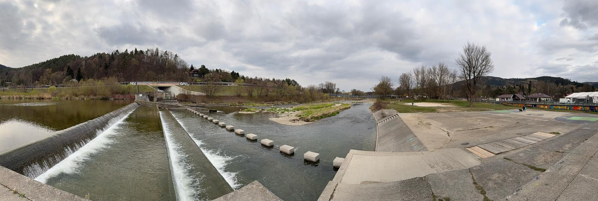
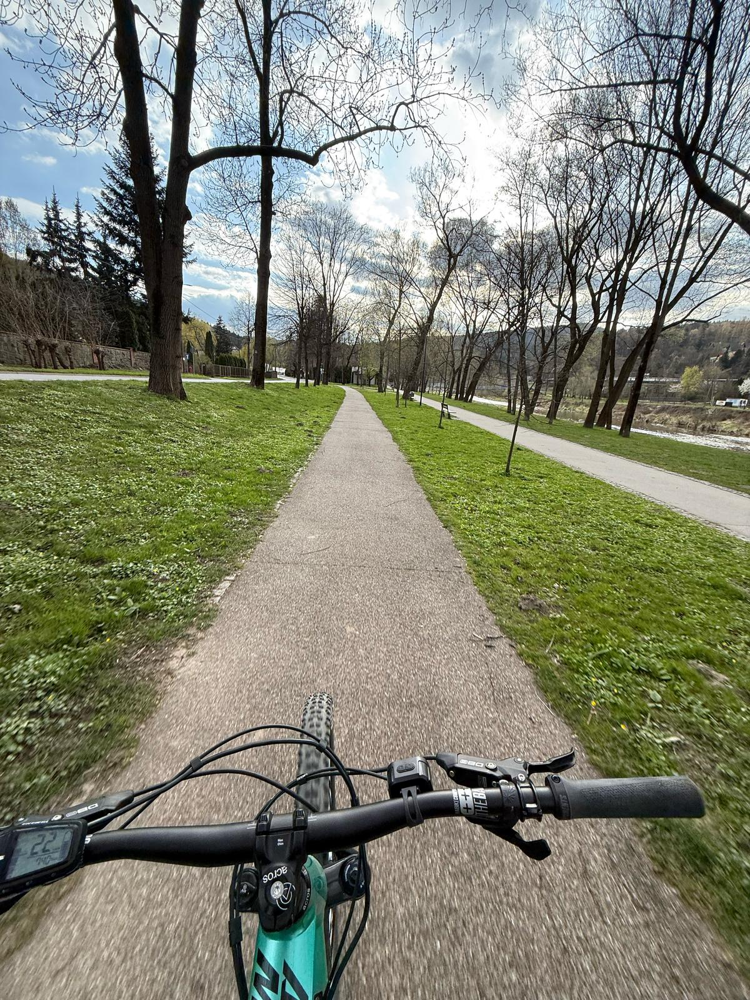
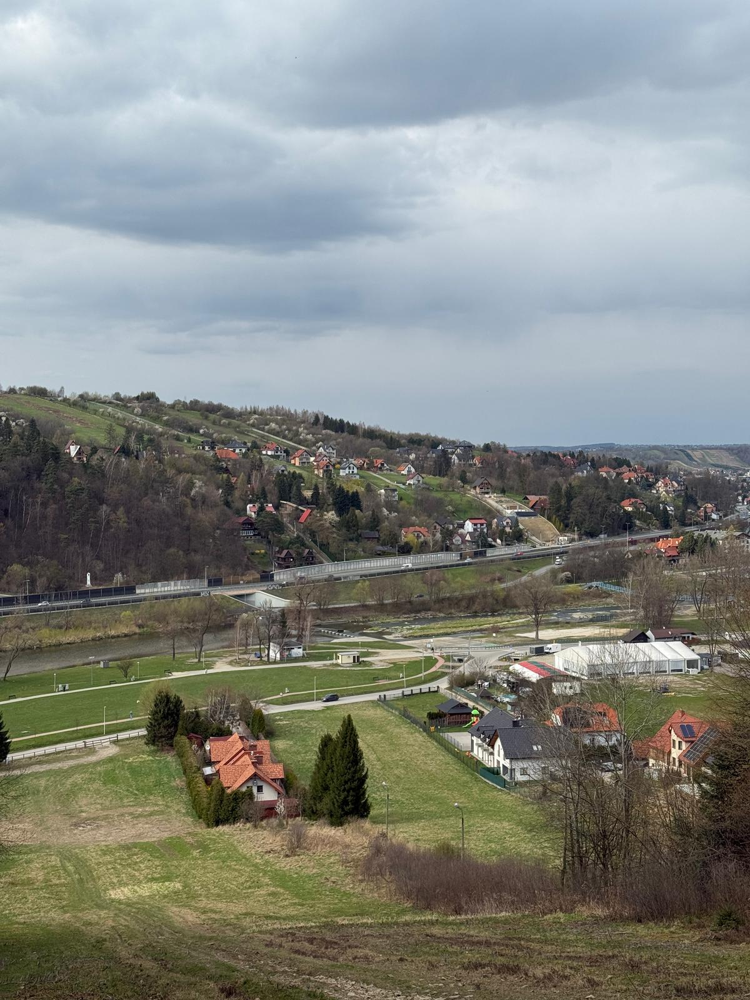

Zarabie w Myślenicach to piękna dzielnica, która jest popularnym miejscem wypoczynku zarówno dla mieszkańców, jak i turystów. Znajduje się tam wiele atrakcji, takich jak plaże nad rzeką Rabą, parki, ścieżki rowerowe i piesze, a także miejsca do uprawiania sportu. Zarabie stało się bardzo popularne w ostatnich latach, dzięki modernizacji i nowym inwestycjom, które uczyniły to miejsce jeszcze bardziej przyjaznym.
Zarabie ma swoją historię – jeszcze w latach 70. XX wieku było to znane miejsce wypoczynkowe, z plażami i kajakami, które przyciągały turystów. Dziś to miejsce, które łączy piękno natury z nowoczesnymi atrakcjami.
W przyszłości planowane są kolejne inwestycje w Zarabiu, takie jak ścieżka w koronach drzew, muszla koncertowa, laguna dla dzieci i molo. Dzięki temu będzie to jeszcze ciekawsze miejsce do spędzania czasu na świeżym powietrzu. Jednak ze względu na bliskość rzeki, Zarabie musi również chronić się przed powodziami. Dlatego prowadzone są prace, które mają na celu zapobieganie powodziom i ochronę przed erozją rzeki.
Zarabie to idealne miejsce do wypoczynku, które łączy piękno przyrody z nowoczesnymi atrakcjami. Dzięki ciągłemu rozwojowi staje się coraz bardziej popularne i przyjazne dla każdego, kto chce spędzić czas na świeżym powietrzu.



Powrót do strony głównej...